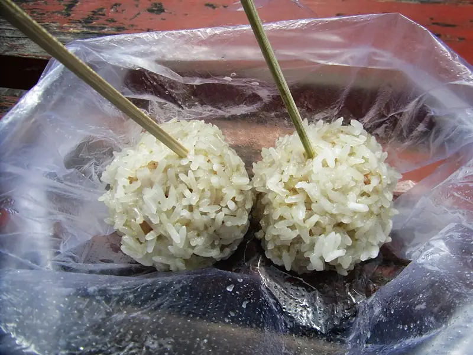

Фото: 猫猫的日记本, CC BY-SA 3.0

Тефтели из индейки на пару
Мягкие тефтели из индейки с рисом, без жарки и специй
50 мин4 порц.221 ккал на порциюБ 22 · Ж 11 · У 9Русская кухня
Продукты на 4 порц.
- Фарш из индейки400 г
- Рис2 ст. л.
- Лук репчатый0,5 шт
- Яйцо куриное1 шт
- Вода300 мл
- Соль по желанию1 щеп.
Как готовить
- Промойте рис и отварите в 300 мл воды 12 минут до полуготовности. Откиньте на сито и остудите.
- Лук очистите и натрите на мелкой тёрке или измельчите блендером в кашицу.
- Смешайте фарш, рис, лук и яйцо. Вымешивайте 2-3 минуты, чтобы масса стала однородной.
- Мокрыми руками скатайте шарики размером с грецкий орех и выложите в пароварку с промежутками.
- Готовьте на пару 25 минут на среднем огне. Готовые тефтели плотные, сок при надрезе прозрачный.
Совет. Сырые тефтели можно заморозить на доске, а потом ссыпать в пакет и хранить до месяца. Готовить из заморозки на 10 минут дольше.